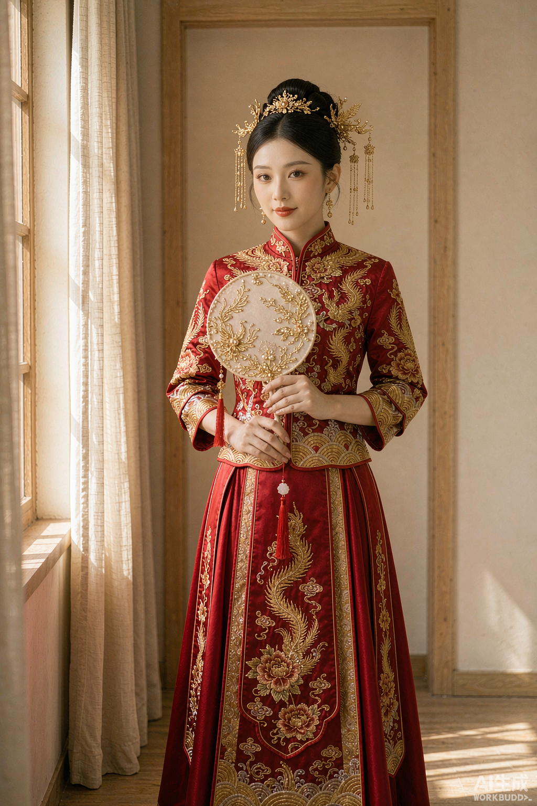
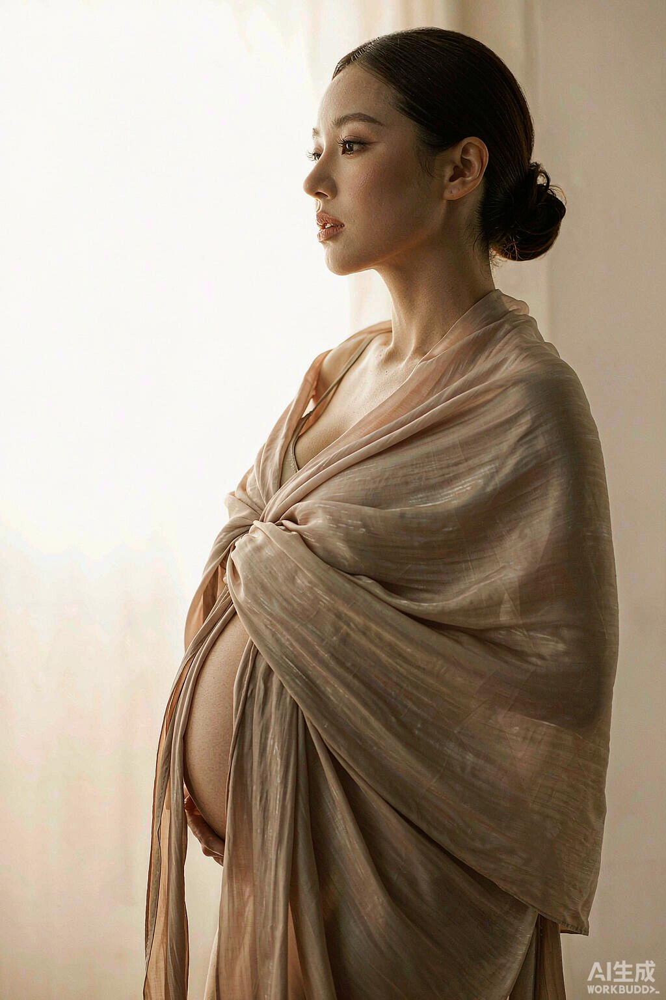

←Collections
选择你的美
每种时刻 · 各成一册
Five Languages of Beauty
 西式浪漫
西式浪漫

新中式
更多时刻
MORE MOMENTS
订婚宴跟妆
Engagement Rouge
2 册 · 轻纱与微醺的光
→
孕妈照
Maternity Soft
2 册 · 柔光里的期待
→

亲子照 Family Warm 2 册 · 一起长大的证据 →
SCROLL
1
双封面保留：婚礼两条线不动，仅副文案改为「每种时刻 · 各成一册」
2
新增「更多时刻」：三条玻璃卡（缩略图+名+册数），落位首页 entries 同款语言
作品系列 · 1+3 扩展collection —— 双封面不动，下方加三系列入口